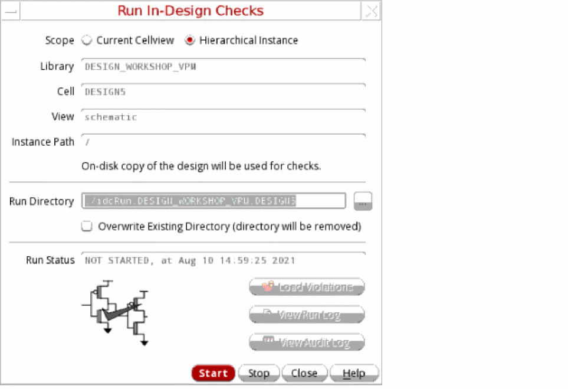
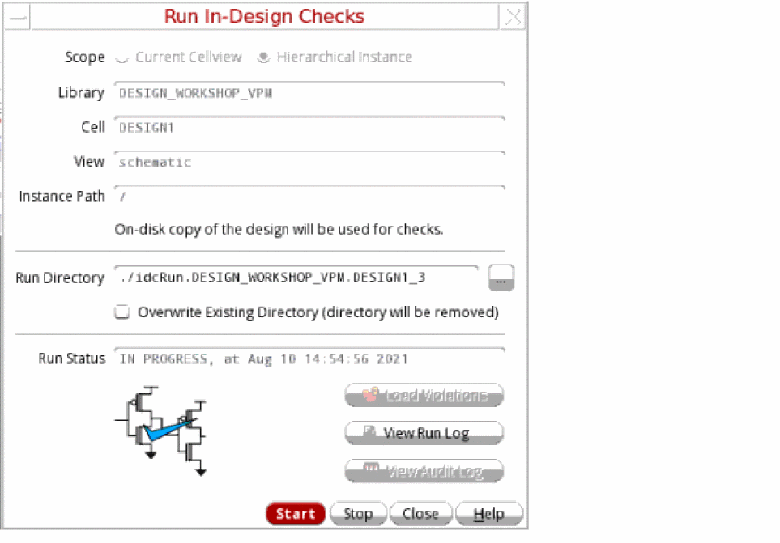
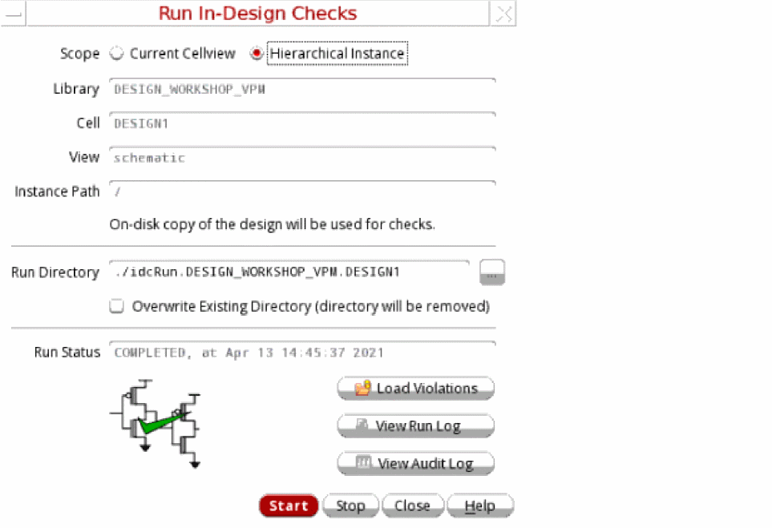
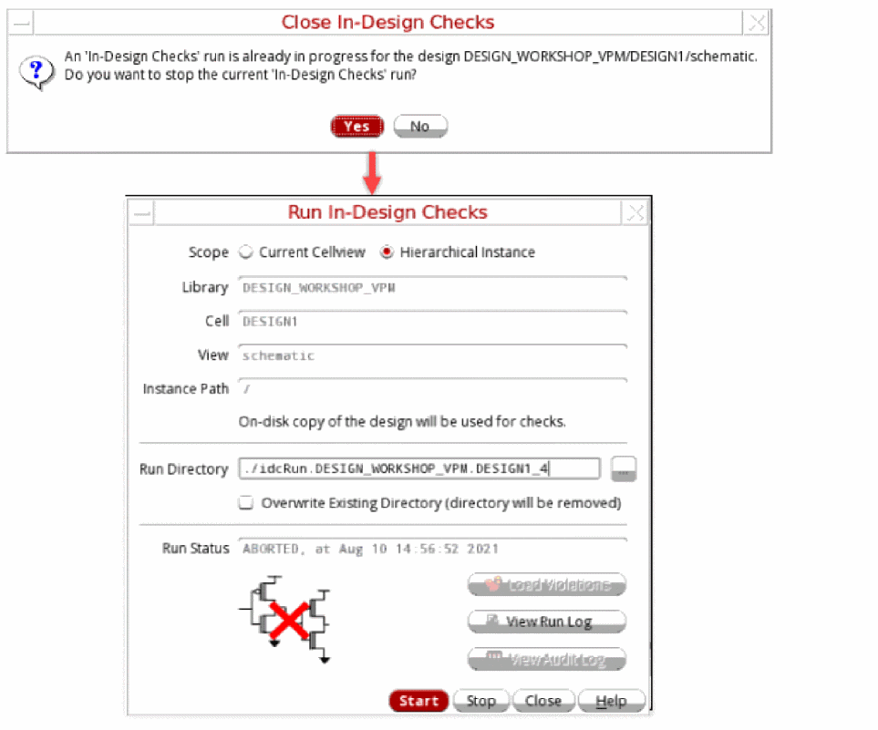

Checking a Design in Background Mode
While checking a design, you can enable background mode to perform other processes in the same Virtuoso session while the in-design checks are run in the background. To run the In-Design Checks in background mode, perform the following steps:
-
Set the runIDCInBackground environment variable to
t. - Load the setup in the Power Manager Setup form.
-
Choose Power Manager – Run In-Design Checks. The Run In-Design Checks (Non-Blocking) form is opened.
 - Select the appropriate value for the Scope field. The Library, Cell, View, and Instance Path are read-only fields.
- Specify the run directory.
- Select Overwrite Existing Directory (directory will be removed) to replace any existing run directory with the same name.
-
Click Start to initiate the In-Design Checks run in the background. Only the on-disk copy of design is used for running the checks.
The View Run Log button is enabled to view the replay log for the background process.
 - [Optional] View the Run Status field and the graphic on the form being updated as the run progresses.
-
Click the View Audit Log button when the background process has completed successfully to view the audit log for the In-Design Checks run. Similarly, click the Load Violations button when the background process has completed to view the backannotated violations on the design.
 -
[Optional] Click Stop to halt the active in-design checks run in the background if an incorrect version of design is used or some updates need to be done in the design. The run is stopped after you confirm.
 - [Optional] Click Close to halt the active in-design checks run in the background and close the form. The run is stopped and the form is closed after you confirm.
If you specify the run directory of a specific Virtuoso session in some other Virtuoso session, the last saved status of the run is loaded. Subsequently, you can view the last results, related setup file, and violations. You can complete the run if it was not completed earlier.
Related Topics
Defining the Severity of Design Checks
Checking a Design in Foreground Mode
Loading the Violations Database
Return to top